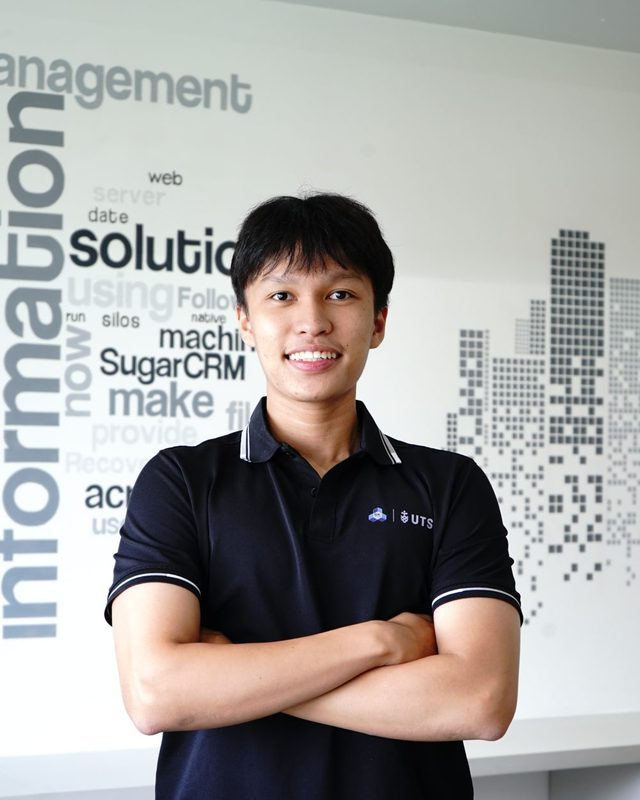

Nguyen Minh Quan
AI researcher · Founder · Ho Chi Minh City
I study how machines can anticipate human actions from the first few frames of 3D skeleton motion, and I build technology that protects people when it counts.
Bachelor of Artificial Intelligence at UTS (transnational programme with HCMUT). Research Assistant at the HCMUT-URA Research Group, CEO of Odylytics, and Venture Analyst at B71.

- 2026
Leveraging 3D Skeleton Motion for Early Action Anticipation via Spatio-Temporal Causal Modeling
IEEE KSE 2026 · B rank
- 2026
Transition-Aware History Modeling for Skeleton-Based Early Action Anticipation
DAI 2026 · Q1
- 2026
Nhập môn điện toán (Introduction to Computing), 2026 edition
Textbook · HCMUT
Full record on ORCID: 0009-0008-9621-1326 ↗
- Mar 2026 — nowResearch Assistant · HCMUT-URA
Co-author of two deep-learning papers on skeleton-based early action anticipation; co-developing HCMUT’s Introduction to Computing textbook.
- Aug 2026 — nowVenture Analyst · B71
Scouting and evaluating early-stage startups for the 84X acceleration programme.
- Jul 2026 — nowCEO · Odylytics
Leading a 10+ person team building digital infrastructure for public impact.
- 2025 — 2028University of Technology Sydney
Bachelor of Artificial Intelligence · GPA 6.6 / 7.0 · WAM 88%
- 2025 — 2028HCMC University of Technology
Transnational education with UTS · GPA 4.0 / 4.0
- 2018 — 2025Lawrence S. Ting School
High school · Top 5% · SAT 1500 · IELTS 8.0
- 2026First Place · EPICS 8th (International)
Arizona State University & Dow Vietnam
- 2026First Place · OPC25
OISP Presentation Contest, HCMUT
- 2026Second Place · Bach Khoa Innovation (International)
HCMUT
- 2026National Finalist
14th Design, Fabrication & Application Competition, HCMC DOST
- 2026UTS Dean’s List
Faculty of Engineering & IT, UTS
- 2025Second Place · HPC Hackathon
HPC Summer School, HCMUT × ACM
- 2025Best Presenter
REACH Vietnam, UTM Malaysia